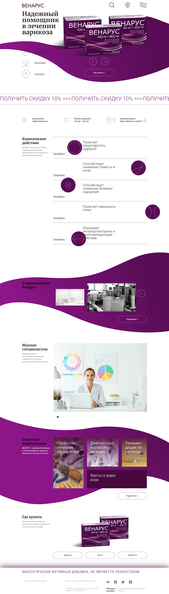
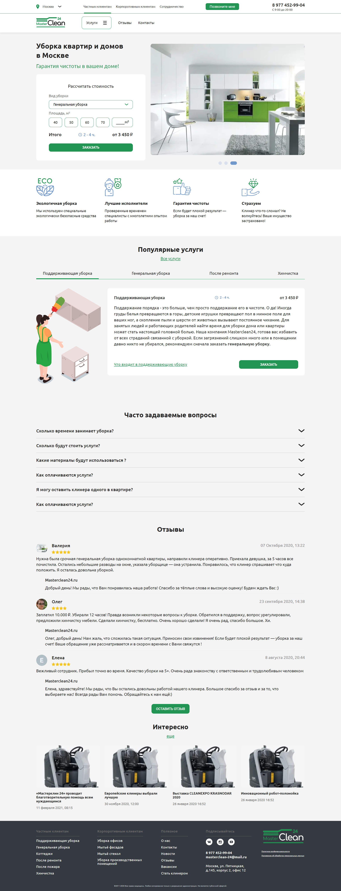
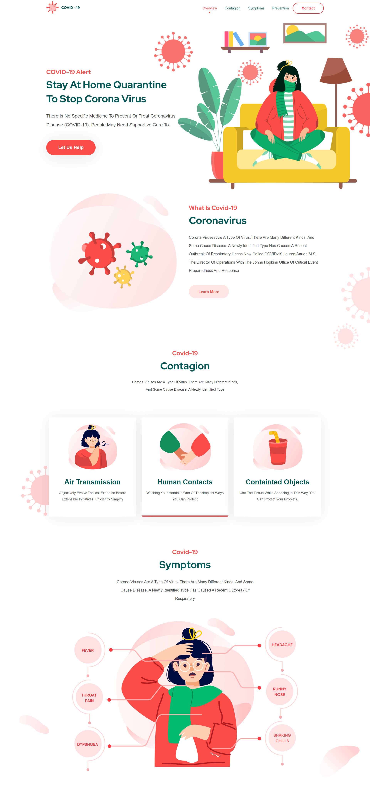
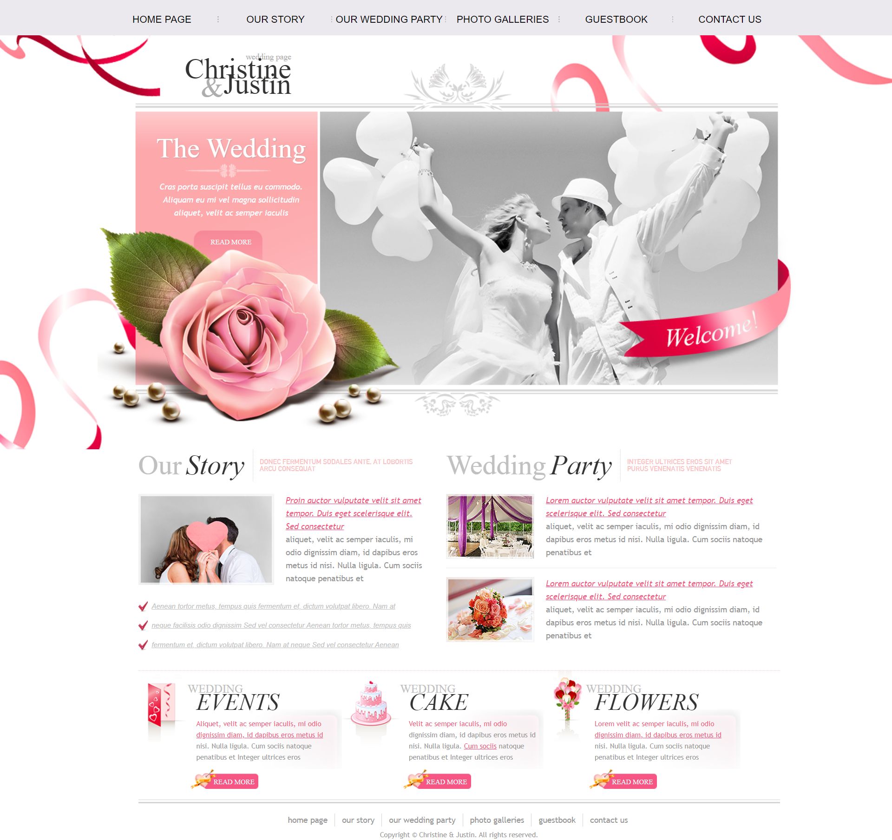
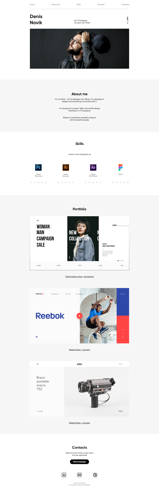
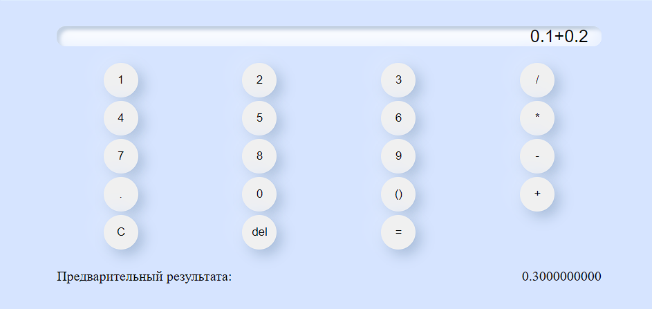
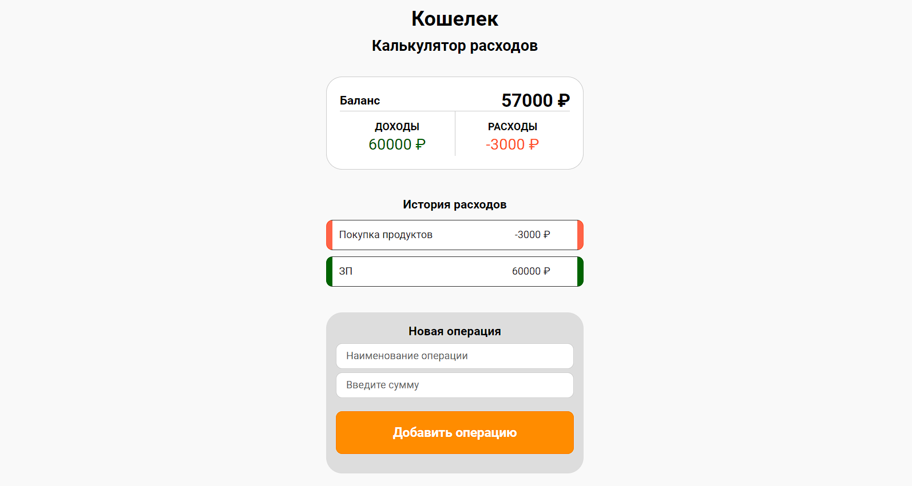
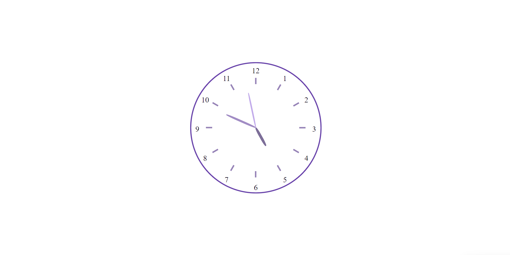
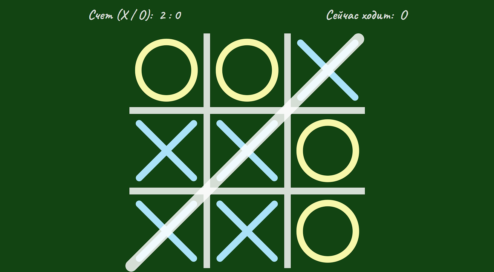
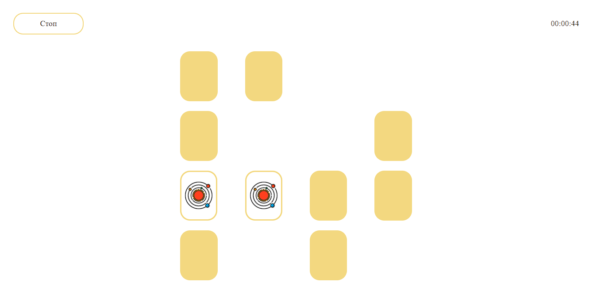

<section id="projects" class="projects">
    <div class="container">
        <h2 class="title projects__title">мои проекты
            <span class="title__desc">Коллекция моих работ</span>
        </h2>
        <div class="projects__box">
            <h3 class="subtitle projects__subtitle">Вёрстка
                <span class="subtitle__desc">Работы по вёрстке</span>
            </h3>
            <ul class="projects__list">
                <li>
                    <article class="project">
                        
                        <h5 class="project__title">Тестовое задание: сайт компании "Венарус" (landing-page)</h5>
                        <p class="project__desc">В проекте используются следующие js-библиотеки: <strong>Swiper</strong> - для реализации слайдеров; <strong>LightGallery</strong> - для реализации галерей с видео.<br>На сайте реализованы анимации для <strong>SVG</strong>-элементов.<br>Проект собирался с помощью <strong>Gulp</strong>.</p>
                        <div class="project__control"><a href="https://zharikovaes.github.io/Venarus/" class="project__btn btn bold" target="_blank">Открыть работу</a><a class="project__btn btn" target="_blank" href="https://github.com/ZharikovaES/Venarus">Github Репозиторий</a></div>
                    </article>
                </li>
                <li>
                    <article class="project">
                        
                        <h5 class="project__title">Сайт cleaning-компании (многостраничник)</h5>
                        <p class="project__desc">В проекте используются следующие js-библиотеки: <strong>Swiper</strong> - для реализации слайдеров; <strong>SimpleBar</strong> - для реализации скроллбаров.<br>Проект разрабатывался с использованием <strong>Gulp</strong>.</p>
                        <div class="project__control"><a href="https://zharikovaes.github.io/MasterClean24/" class="project__btn btn bold" target="_blank">Открыть работу</a><a class="project__btn btn" target="_blank" href="https://github.com/ZharikovaES/MasterClean24">Github Репозиторий</a></div>
                    </article>
                </li>
                <li>
                    <article class="project">
                        
                        <h5 class="project__title">Инфо-сайт по Covid (landing-page)</h5>
                        <p class="project__desc">Проект написан с использованием <strong>jQuery</strong>. В проекте используется jQuery-плагин <strong>JQVMap</strong> (svg-карта стран). <br>Для отображения иконок соц. сетей используется иконочный шрифт от <strong>FontAwesome</strong>.</p>
                        <div class="project__control"><a class="project__btn btn bold" target="_blank" href="https://zharikovaes.github.io/Covid-19/">Открыть работу</a><a class="project__btn btn" target="_blank" href="https://github.com/ZharikovaES/Covid-19">Github Репозиторий</a></div>
                    </article>
                </li>
                <li>
                    <article class="project">
                        
                        <h5 class="project__title">Christine & Justine (сайт-визитка)</h5>
                        <p class="project__desc">Первый сверстанный мини-проект. Сверстан без адаптива под мобильные устройства.</p>
                        <div class="project__control"><a class="project__btn btn bold" target="_blank" href="https://zharikovaes.github.io/Christine-Justine/">Открыть работу</a><a class="project__btn btn" target="_blank" href="https://github.com/ZharikovaES/Christine-Justine">Github Репозиторий</a></div>
                    </article>
                </li>
                <li>
                    <article class="project">
                        
                        <h5 class="project__title">Сайт-визитка (landing page)</h5>
                        <p class="project__desc">При верстке сайта использовался <strong>jQuery</strong>.</p>
                        <div class="project__control"><a class="project__btn btn bold" target="_blank" href="https://zharikovaes.github.io/Portfolio/">Открыть работу</a><a class="project__btn btn" target="_blank" href="https://github.com/ZharikovaES/Portfolio">Github Репозиторий</a></div>
                    </article>
                </li>
            </ul>
        </div>
        <div class="projects__box">
            <h3 class="subtitle projects__subtitle">JavaScript-приложения
                <span class="subtitle__desc">Небольшие приложения на JS</span>
            </h3>
            <ul class="projects__list">
                <li>
                    <article class="project">
                        
                        <h5 class="project__title">Калькулятор</h5>
                        <p class="project__desc">Первое мини-приложение на JavaScript. Разработка учитывает все "крайние" значения, в том числе "0.1 + 0.2".</p>
                        <div class="project__control"><a class="project__btn btn bold" target="_blank" href="https://zharikovaes.github.io/CalculatorApp/">Открыть работу</a><a class="project__btn btn" target="_blank" href="https://github.com/ZharikovaES/CalculatorApp">Github Репозиторий</a></div>
                    </article>
                </li>
                <li>
                    <article class="project">
                        
                        <h5 class="project__title">Калькулятор расходов</h5>
                        <p class="project__desc">Мини JS-приложение, позволяющее работать со своими доходами и расходами, храня их в localStorage.</p>
                        <div class="project__control"><a class="project__btn btn bold" target="_blank" href="https://zharikovaes.github.io/MoneyCalculatorApp/">Открыть работу</a><a class="project__btn btn" target="_blank" href="https://github.com/ZharikovaES/MoneyCalculatorApp">Github Репозиторий</a></div>
                    </article>
                </li>
                <li>
                    <article class="project">
                        
                        <h5 class="project__title">Часы</h5>
                        <p class="project__desc">Мини JS-приложение, демонстрирующее текущее время на циферблате.</p>
                        <div class="project__control"><a class="project__btn btn bold" target="_blank" href="https://zharikovaes.github.io/ClockApp/">Открыть работу</a><a class="project__btn btn" target="_blank" href="https://github.com/ZharikovaES/ClockApp">Github Репозиторий</a></div>
                    </article>
                </li>
                <li>
                    <article class="project">
                        
                        <h5 class="project__title">Игра "Крестики-Нолики"</h5>
                        <p class="project__desc">Мини-приложение - игра "Крестики-Нолики".</p>
                        <div class="project__control"><a class="project__btn btn bold" target="_blank" href="https://zharikovaes.github.io/TictactoeApp/">Открыть работу</a><a class="project__btn btn" target="_blank" href="https://github.com/ZharikovaES/TictactoeApp">Github Репозиторий</a></div>
                    </article>
                </li>
                <li>
                    <article class="project">
                        
                        <h5 class="project__title">Игра "Парные карточки"</h5>
                        <p class="project__desc">Мини-приложение - игра "Парные карточки". Приложение написано с использованием библиотеки jQuery.</p>
                        <div class="project__control"><a class="project__btn btn bold" target="_blank" href="https://zharikovaes.github.io/PariedCardsApp/">Открыть работу</a><a class="project__btn btn" target="_blank" href="https://github.com/ZharikovaES/PariedCardsApp">Github Репозиторий</a></div>
                    </article>
                </li>
            </ul>
        </div>
        <p class="projects__text">
            Прочие проекты и тестовые представлены на моем <a target="_blank" href="https://github.com/ZharikovaES">GitHub</a>.
        </p>

    </div>
    
</section>